Transport Integrity and Operational Auditability
Part 5 closes the security track with transport controls, logging evidence, and release-time security gates.
Security Whitepaper Series
Read in order: trust boundary -> control matrix -> verification -> token hardening -> transport and auditability.
Part 5 closes the security track by combining transport integrity with operational auditability. The goal is to leave evaluators with a complete, inspectable security story from boundary model to production governance evidence.
Final chapter context
The previous chapters covered trust assumptions, controls, verification, and token hardening. This chapter focuses on transport path integrity, release artifact integrity, and audit evidence completeness. Together, the five parts form one continuous control argument.
1. Transport integrity model
Transport integrity is evaluated across two planes: provider API paths and local API automation paths. Controls must address confidentiality, integrity, and route correctness for both.

- Provider paths: controlled egress, proxy policy compliance, timeout and retry diagnostics.
- Local API paths: TLS expectations where configured, auth enforcement, and route exposure minimization.
Transport controls are meaningful only when verification and incident triage map back to concrete stage/reason diagnostics.
2. Release artifact integrity and rollout discipline
Security posture can be undermined by weak release process even if runtime controls are strong. Required practices include checksum validation, controlled distribution channels, and clear release-note traceability for user-visible security-impacting changes.
Operationally, release integrity should be treated as a security control surface, not a pure DevOps concern.
3. Auditability evidence pack
An audit-ready evidence pack should include:

- control-to-proof matrix entries for active controls;
- recent verification checklist execution records;
- token lifecycle operation records and revocation proof;
- transport/path validation outputs and failure taxonomy examples;
- release evidence showing control-impacting change traceability.
This structure allows reviewers to trace claims without requesting ad-hoc data pulls.
4. Case study: audit friction caused by missing linkage
A frequent audit delay occurs when teams have all required artifacts but no linkage between them. For example, a release note references token hardening, but no direct link exists to verification output or runbook updates. Auditors then spend time reconstructing the chain manually. The practical fix is to embed artifact references directly in release evidence packets and keep identifiers stable across tooling.
Good auditability is mostly about linkage quality, not artifact volume.
5. Security review closeout model
Use a structured closeout checklist:
- Confirm boundary assumptions still match deployment reality.
- Confirm controls and verification cadence are current.
- Confirm token lifecycle records are complete and recent.
- Confirm transport checks pass under actual route policy.
- Confirm release evidence links to control-impacting changes.
This closeout model reduces "paper pass" outcomes and improves operational confidence.
6. How to use this with the technical whitepaper series
Security and technical whitepapers are intentionally linked. Use Security Parts 1-5 for trust and controls, then use Technical Parts 1-5 for architecture, data model, runtime reliability, QA gates, and stack tradeoffs:
Reading both tracks together gives evaluators both control assurance and engineering execution assurance.
Implementation FAQ for final sign-off
Q: What usually blocks final security approval? Missing linkage between controls, verification outputs, and release evidence.
Q: What is the fastest way to remove audit uncertainty? Maintain one control-to-proof matrix with stable references and ownership.
Q: Is this the end of security work? No. This chapter defines ongoing operating discipline, not one-time certification theater.
Audit program notes: proving controls over time
Auditability is strongest when evidence is generated as part of normal operation, not assembled manually before audits. We recommend that every control-impacting release automatically updates evidence references in one audit packet structure. Manual assembly should be fallback, not default.
A second principle is stable identifiers. If release IDs, control IDs, and runbook references change format frequently, linkage quality drops and audit cycles slow down. Keep identifiers stable and versioned. Stability reduces both internal review cost and external auditor effort.
Third, evaluate evidence freshness. A perfect evidence package from six months ago is weak assurance for current operations. Define freshness thresholds by control class and include stale-evidence alerts in governance review. Freshness discipline keeps audit confidence aligned with runtime reality.
Finally, close the loop between security and technical tracks. Security controls depend on technical execution quality, and technical reliability depends on security ownership clarity. Treat whitepaper tracks as complementary artifacts and review them together in major rollout decisions.
Final review questions before broad rollout
- Can we trace every major security claim to current evidence artifacts?
- Are transport, token, and release controls all represented in one closeout pack?
- Is evidence freshness monitored and reported on a fixed cadence?
- Do technical and security owners agree on residual risks and responsibilities?
Closeout operations notes: maintaining trust after approval
Security sign-off should not be treated as a finish line. The operational goal is sustained trust. Maintain a rolling closeout cycle where each release line updates security evidence links, confirms control freshness, and records residual-risk status changes. This approach keeps governance current and reduces re-approval friction for future rollout waves.
Another key practice is harmonized reporting language across security and technical artifacts. If a reliability incident appears in technical reports but not in security control review, decision-makers receive conflicting signals. Keep one shared incident taxonomy and ensure both tracks reference it consistently.
Finally, track governance debt explicitly. Missing evidence links, stale control proofs, and unresolved exceptions should appear in roadmap governance work, not only in security side notes. Visible governance debt encourages timely remediation and prevents silent erosion of control quality.
Appendix: audit execution and evidence lifecycle
Audit execution quality depends on consistency more than volume. A compact, repeatable evidence structure is better than large unstructured archives. We recommend one evidence index file per release line that maps controls to proof artifacts and freshness dates. This gives auditors a deterministic starting point and reduces manual interpretation effort.
Evidence lifecycle management should include creation, review, retention, and retirement policies. Outdated or orphaned evidence creates confusion and can undermine confidence in current controls. Apply retention windows based on policy and compliance obligations, and document retirement logic so teams know why artifacts are removed.
For recurring governance meetings, include one section on evidence quality trends: stale artifact count, broken references, unresolved exception age, and control update latency. These indicators reveal whether auditability is improving or drifting.
Finally, integrate audit findings into roadmap decisions. Findings that indicate systematic control friction should drive product and process updates, not just one-time documentation patches. This closes the loop between assurance and engineering execution.
Data sources for this chapter
- Security, API Token Guide, and Documentation Center for operational control references.
- Release Ledger and Roadmap for process and release traceability references.
- Whitepaper Series for cross-part continuity and reviewer navigation.
Series close
The security series is designed as one flow: threat model, controls, verification, token hardening, and transport/auditability. Use the five parts together in security review and procurement due diligence to avoid fragmented interpretation.
Security Review Checklist
Download the operator checklist used in enterprise reviews
Use this checklist in architecture review, rollout sign-off, and recurring governance audits.
Validate this control path in your own environment
Save your first $1,000 before the next billing cycle.